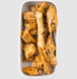

Heura con pisto manchego
con calabacín,zanahoria y cebolla
- Cebolla
1 unidad
- Heura
160 gramos

- Tomate triturado
400 gramos
- Pimiento rojo
1 unidad
- calabacín
1 unidad

Instrucciones
-
¡Asegúrate de utilizar las cantidades indicadas a la izquierda para preparar tu receta! Pela la cebolla, divídela en dos y córtala en daditos pequeños. Retira los extremos del calabacín y córtalo por la mitad a lo largo. Luego, corta cada mitad en dados de 1-2 cm. Corta el pimiento por la mitad y quítale las semillas. Luego, córtalo en cuadrados de 1-2 cm. Pela y pica el ajo (ver cantidad en ingredientes).
- En una sartén antiadherente grande, calienta un chorrito de aceite a fuego medio. Una vez caliente, agrega la heura y saltea durante 5 min, hasta que empiece a dorarse. Retira y reserva. En la sartén, agrega un chorrito de aceite y el ajo. Calienta a fuego medio y cocina 1-2 min.
- En la sartén, agrega la cebolla y sal y cocina 8-10 min, removiendo, hasta que quede transparente. Luego, añade el pimiento y el calabacín y cocina 5 min más, con la sartén tapada. Por último, añade el tomate triturado y cocina a fuego medio y sin la tapa 13-15 min más, removiendo para integrar los ingredientes, hasta que las verduras queden tiernas y la salsa se reduzca.
- Agrega la heura en la sartén y cocina 2 min más, removiendo para integrar. Prueba y rectifica de sal y pimienta, luego, sirve en platos hondos.
- SABÍAS QUE: El pimiento rojo y el perejil contienen gran cantidad de vitamina C, además de las fuentes ya conocidas, como los cítricos.